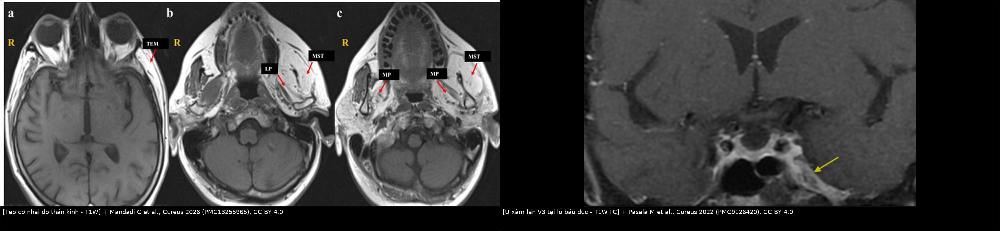
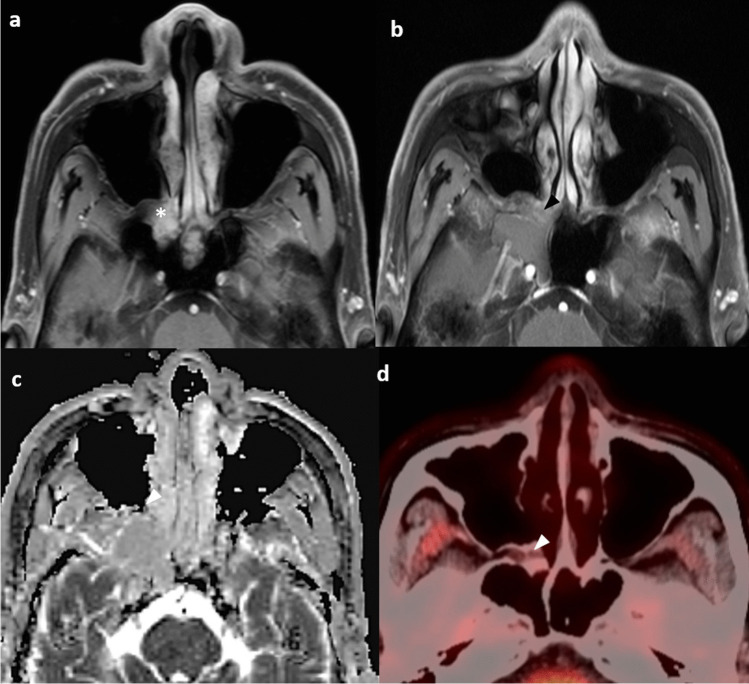
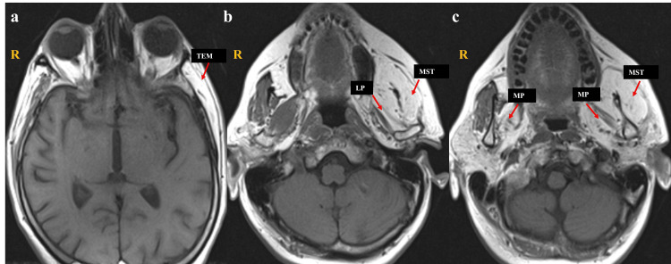
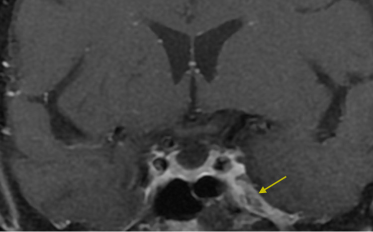
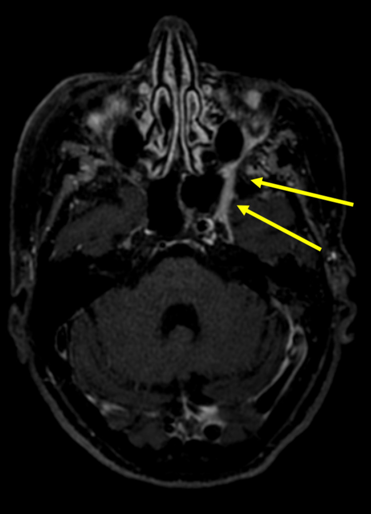
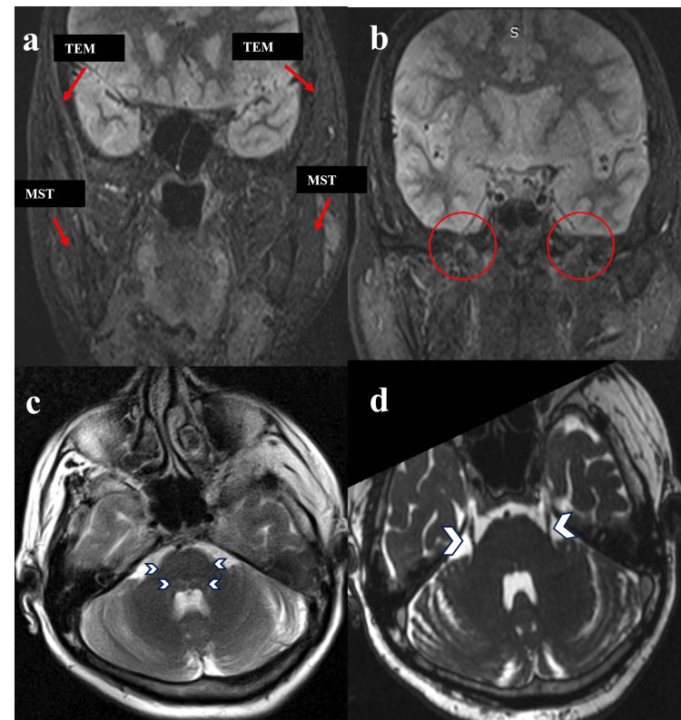
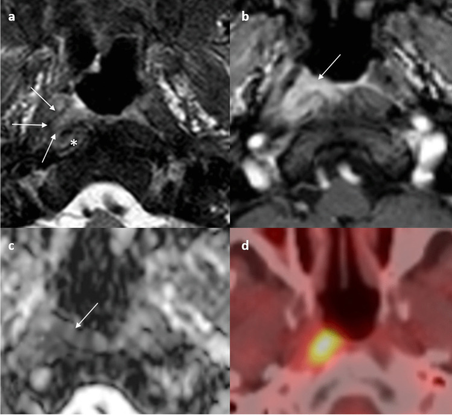

1764 — Bệnh thần kinh sinh ba V3 sau xạ trị đầu cổ / Radiation-induced trigeminal neuropathy (V3)
Tags: pattern:teo-co pattern:benh-than-kinh pattern:xo-hoa-sau-xa pattern:ngam-thuoc vung:dau-co vung:nen-so vung:khoang-nhai protocol:MRI protocol:DWI protocol:lieu-OAR score:CTCAE incidentaloma:khong
Mức chắc chắn (certainty): tổng hợp y văn (literature synthesis) — ghép các nguồn sau.
Nguồn có PMCID (tên tác giả đã đối chiếu):
- Li KY et al., Neuroradiology 2025 — PMC12041163, CC BY 4.0.
- Tashlykov V et al., Pain Rep 2026 — PMC12915720, CC BY 4.0.
- Mandadi C et al., Cureus 2026 — PMC13255965, CC BY 4.0.
- Wang C et al., Medicine 2018 — PMC6112862, CC BY 4.0.
- Pasala M et al., Cureus 2022 — PMC9126420, CC BY 4.0.
- Nalley A et al., Insights Imaging 2026 — PMC13264650, CC BY 4.0.
Nguồn chỉ dùng số liệu (không PMCID): Kong L et al., Int J Radiat Oncol Biol Phys 2011 (PMID 20605344); Luk YS et al., Oral Oncol 2013 (PMID 22892236); Duru Birgi S et al., Head Neck 2023 (PMID 37740459); Chow JCH et al., Radiother Oncol 2019 (PMID 31252300); Kato K et al., Magn Reson Med Sci 2002 (PMID 16082138); Shin HY et al., Clin Neurophysiol 2013 (PMID 23022037); Mousavi SH et al., J Neurosurg 2017 (PMID 27471888).
Không có ca nguyên văn của nhóm — 3 ca trong quiz là ca dựng từ ảnh + số liệu công bố, ghi rõ nguồn từng ảnh.
Câu chốt: bệnh thần kinh V3 sau xạ không phải "tê do răng" và cũng không phải tái phát u cho đến khi chứng minh ngược. Ba con số phải thuộc: với liệt dây sọ nói chung sau xạ vòm (nhóm dây trên chứa V chiếm 13,9%), thời gian tiềm tàng trung vị 7,6 năm (0,3–34 năm) và nguy cơ tích lũy 44,5% ở 20 năm trong đoàn hệ xạ quy ước (Kong 2011); với xạ điều biến hiện đại, liệt dây sọ 3,7% (36/965) nhưng vẫn xuất hiện sau 8,9 năm (Luk 2013); và riêng V3, trong xạ tuyến mang tai, Dmax 66 Gy / D1cc 62,7 Gy là mốc bắt đầu có độc tính cảm giác (61% độ I–II), còn teo cơ nhai một bên không khối trên MRI là dấu hiệu mất thần kinh, không phải chẩn đoán nguyên nhân — phải soi chính dây V3 và lỗ bầu dục, không sinh thiết mù. Chưa có nghiên cứu riêng đủ lớn về tỉ lệ V3 đơn thuần — đây là giới hạn bằng chứng của bài.
1. Tổng quan bệnh học – cơ chế hình ảnh
1.1 V3 làm gì và đi qua đâu (giải phẫu quyết định cách đọc phim)
- V3 là dây hỗn hợp. Nhánh cảm giác chi phối da vùng dưới ổ mắt–má–cằm, răng dưới, lợi và sàn miệng, 2/3 trước lưỡi (dây lưỡi), niêm mạc má (dây má), khớp thái dương hàm và ống tai ngoài (dây tai–thái dương). Nhánh vận động chi phối cơ masseter, temporalis, pterygoid trong, pterygoid ngoài, thêm cơ hàm–móng, bụng trước cơ nhị thân, tensor veli palatini, tensor tympani.
- Đường đi: nhân vận động ở cầu não → rễ cảm giác đi vào hạch Gasser (Meckel's cave) → V3 thoát qua lỗ bầu dục (foramen ovale) vào khoang nhai → chia thân trước (masseter, temporalis, pterygoid ngoài, dây má) và thân sau (dây tai–thái dương, dây lưỡi, dây ổ răng dưới, pterygoid trong, nhánh cho cơ hàm–móng/tensor).
- Ba đoạn "phải soi" trên MRI: (1) Meckel's cave – xoang hang, nơi u có thể chạm dây trước khi ra khỏi sọ; (2) lỗ bầu dục, nơi dây đi qua ống xương hẹp và là nơi u lan theo thần kinh (perineural spread, PNS) để lại dấu giãn lỗ, mất mỡ quanh dây; (3) khoang nhai – xương hàm dưới, nơi dây phân nhánh và nơi xạ trị vòm họng/tuyến mang tai đặt liều cao nhất.
- Vì sao phải thuộc giải phẫu: mức tổn thương quyết định kiểu teo cơ. Tổn thương tại hoặc trước lỗ bầu dục → teo cả 4 cơ nhai + tensor; tổn thương một nhánh → teo một cơ hoặc chỉ mất cảm giác một vùng. Đọc "teo cơ nhai" mà không mô tả cơ nào là bỏ mất thông tin định khu quan trọng nhất.
1.2 TẠI SAO xạ gây bệnh thần kinh: chuỗi xơ hóa – thiếu máu – hủy myelin
- Tổn thương mạch máu nhỏ là bước đầu. Xạ → apoptosis tế bào nội mô, mất mao mạch, thiếu oxy mô kéo dài → TGF-β tăng, nguyên bào sợi biệt hóa thành nguyên bào cơ (myofibroblast), tổng hợp collagen I/III và ức chế men phân hủy collagen (MMP). Kết quả là xơ hóa mô mềm quanh dây, dây bị chèn ép trong ống xương và nuôi dưỡng kém.
- Trên dây thần kinh: phù myelin, hủy myelin từng đoạn, mất sợi trục, rồi thoái hóa sợi trục; các sợi cảm giác lớn có myelin dày bị ảnh hưởng sớm. Vì vậy triệu chứng thường bắt đầu bằng dị cảm/tê rồi mới đau rát hoặc yếu cơ — khác với đau điện giật từng cơn kinh điển của đau dây V nguyên phát.
- TẠI SAO tiềm tàng lâu: xạ không "cắt" dây ngay. Dây là mô hậu phân bào, chuyển hóa chậm; tổn thương tích lũy qua nhiều tháng–nhiều năm mới đủ mất bù. Vì thế bệnh nhân ung thư vòm sống 10–20 năm mới là nhóm trả giá; trong đoàn hệ xạ quy ước, 22,4% liệt dây sọ ở 10 năm và 44,5% ở 20 năm (Kong 2011).
- Yếu tố làm nặng: tổng liều, liều mỗi phân đoạn, hóa trị đồng thời, đái tháo đường, xơ hóa cổ trên; ở đoàn hệ vòm, liệt dây sọ lúc chẩn đoán là yếu tố tiên lượng độc lập (Kong 2011). Ở dây hạ thiệt, đái tháo đường và T giai đoạn muộn cũng là yếu tố nguy cơ độc lập (Chow 2019).
- Vì sao hình ảnh lại "teo + ngấm thuốc" chứ không phải "khối": xơ hóa và viêm quanh dây làm tăng tín hiệu T2 và ngấm thuốc ở mô đệm quanh dây, nhưng không tạo khối tế bào; cơ thì teo vì mất nuôi dưỡng thần kinh, không phải vì u. Đây là nền tảng để phân biệt với u lan theo dây — u tạo khối/giãn dây/lỗ, xạ chỉ tạo xơ và teo.
1.3 TẠI SAO teo cơ nhai không khối: chuỗi mất thần kinh
- Mất thần kinh → mất tín hiệu dinh dưỡng cơ (myogenin/MyoD, yếu tố sinh tồn) → phân hủy protein nhanh hơn tổng hợp → teo sợi cơ; tế bào vệ tinh không đủ bù → mô mỡ thay thế. Trên MRI, mỡ thay thế có T1W sáng, T2W sáng, mất tín hiệu trên fat-sat — đây là "teo mỡ" (fatty atrophy), không phải phù.
- Chuỗi thời gian (Kato 2002, 6 ca, theo dõi 6–44 tháng):
- ≤ 3 tháng: cơ tăng tín hiệu T2W và ngấm thuốc T1W sau tiêm, T1W chưa đổi, chưa teo → giai đoạn phù mất thần kinh cấp; dễ bị đọc nhầm là viêm cơ/u.
- > 3 tháng: T1W và T2W đều tăng tín hiệu (mỡ), thể tích giảm, ngấm thuốc giảm → giai đoạn teo mỡ mạn.
- Hệ quả thực hành: một MRI bình thường ở tháng thứ 1–2 không loại trừ tổn thương thần kinh; nếu nghi ngờ, chụp lại sau 3–6 tháng để thấy teo mỡ. Ngược lại, teo mỡ đơn thuần không cho biết nguyên nhân: xạ, u, chấn thương, phẫu thuật, bệnh thần kinh vận động đều cho hình ảnh giống nhau. Nguyên nhân nằm ở dây và lỗ bầu dục, không nằm ở cơ.
1.4 Số liệu định lượng phải thuộc
| Đại lượng | Con số | Nguồn |
|---|---|---|
| Liệt dây sọ sau xạ vòm họng (xạ quy ước, theo dõi 11,4 năm) | 30,9% (98/317); tiềm tàng trung vị 7,6 năm (0,3–34) | Kong 2011, PMID 20605344 |
| Nguy cơ tích lũy liệt dây sọ | 10,4% / 22,4% / 35,5% / 44,5% ở 5 / 10 / 15 / 20 năm | Kong 2011 |
| Nhóm dây "trên" (gồm V) so với dây "dưới" | 13,9% vs 25,5% (p < 0,001) | Kong 2011 |
| Liệt dây sọ sau xạ vòm hiện đại | 3,7% (36/965), theo dõi 8,9 năm; dây XII hay gặp nhất | Luk 2013, PMID 22892236 |
| Độc tính thần kinh sinh ba sau xạ tuyến mang tai | 61% độ I–II (I 22%, II 39%), theo dõi 29,5 tháng | Duru Birgi 2023, PMID 37740459 |
| Triệu chứng trong 18 ca đó | tê cằm 3, khó cử động hàm 3, dị cảm 5 | Duru Birgi 2023 |
| Ngưỡng liều V3 (phân tích ROC, 18 ca) | Dmax 66 Gy · PTV-TN Dmax 65,5 Gy · D0.1cc 65,25 Gy · D0.5cc 63,6 Gy · D1cc 62,7 Gy | Duru Birgi 2023 |
| Mô hình dây hạ thiệt (797 bệnh nhân, IMRT) | 8,7% (69/797); D1cc < 74 Gy EQD2 → 2,4% vs 20,8%; AUC 0,826 | Chow 2019, PMID 31252300 |
| Tiềm tàng dây sọ dưới (6 ca, EMG) | trung vị 61 tháng (20–118); tiến triển chậm nhiều năm; myokymia 3/6, điện cơ 5/6 | Shin 2013, PMID 23022037 |
| Chuỗi mất thần kinh trên MRI | ≤ 3 tháng: T2 sáng + ngấm thuốc, T1 chưa đổi; > 3 tháng: T1/T2 sáng + teo | Kato 2002, PMID 16082138 |
| ADC tái phát vòm họng tại chỗ | 0,887 × 10⁻³ mm²/s; AUC 0,967, Se 87,2%, Sp 94,1% (MRI thường AUC 0,732) | Wang 2018, PMC6112862 |
| ADC tái phát nền sọ (clivus) | 1,018 × 10⁻³ mm²/s; AUC 0,984, Se 95,5%, Sp 91,7% | Wang 2018 |
| ADC trung bình NPC nguyên phát | 871,7 ± 84,4 × 10⁻⁶ mm²/s | Li 2025, PMC12041163 |
| Xơ hóa cơ nhai sau xạ (tổng quan 282 ca) | xơ hóa 48,9%, teo 12,8%, phù 53,2%, phì đại 34% | Nalley 2026, PMC13264650 |
- Đọc con số cho đúng: "30,9%" là của xạ quy ước thập niên 1960–1990, không dùng để hù bệnh nhân IMRT ngày nay; nhưng "3,7%" vẫn là 36 người bị liệt dây sọ vĩnh viễn trong 965 ca, và thời gian tiềm tàng 8,9 năm nghĩa là theo dõi ngắn sẽ bỏ sót. Con số 61% độc tính V3 trong xạ tuyến mang tai đến từ 18 bệnh nhân, hồi cứu, theo dõi 29,5 tháng → không phải tỉ lệ chung, mà là cảnh báo rằng V3 nằm trong vùng liều cao khi u sát lỗ bầu dục/khoang nhai.
- Phản biện (cửa 3): ngưỡng 62,7–66 Gy được suy ra từ 18 bệnh nhân và chưa được xác nhận tiền cứu; không được trình bày như hằng số. Ngược lại, mô hình dây hạ thiệt D1cc 74 Gy EQD2 có 797 bệnh nhân, AUC 0,826, là mốc tham chiếu tốt hơn cho nguyên lý "giới hạn liều điểm nóng trên dây", nhưng không thay thế dữ liệu V3. Trong bài này, 62,7–66 Gy là "vùng cảnh báo", không phải ngưỡng bắt buộc.
2. Mẫu hình + chẩn đoán phân biệt theo vị trí (gamut)
2.1 Mẫu hình lâm sàng
- Chỉ cảm giác: tê/dị cảm môi dưới–cằm, răng dưới, 2/3 trước lưỡi, niêm mạc má; đau rát liên tục hoặc điện giật chồng lên; không yếu cơ, không teo rõ.
- Chỉ vận động: yếu cắn, lệch hàm khi há (về phía tổn thương), teo thái dương/masseter nhìn thấy, không tê — thể hiếm, dễ bị chẩn đoán nhầm là rối loạn khớp thái dương hàm hoặc bệnh cơ.
- Hỗn hợp: vừa tê vừa teo — thể điển hình của tổn thương tại lỗ bầu dục hoặc trước đó; nếu do xạ, thường xuất hiện muộn và tiến triển chậm.
- Đau thần kinh chiếm ưu thế: rát bỏng, dị cảm, đau khi chạm nhẹ (allodynia), không đáp ứng carbamazepine như đau dây V nguyên phát — gợi ý tổn thương thần kinh thực thể.
2.2 Gamut theo đoạn giải phẫu
- Meckel's cave / xoang hang: schwannoma V, meningioma, di căn, lymphoma, sarcoid, IgG4, u lan ngược từ vòm họng.
- Lỗ bầu dục: u lan theo thần kinh (NPC, ung thư biểu mô tuyến dạng nang, SCC da), schwannoma, meningioma, xơ hóa sau xạ, giãn lỗ bầu dục bẩm sinh.
- Khoang nhai: u lan theo V3 từ vòm họng/tuyến mang tai, xơ hóa – teo cơ sau xạ, viêm mô tế bào do răng, sarcoma, di căn.
- Nhánh ngoại vi (dây lưỡi, ổ răng dưới, dây má, tai–thái dương): phẫu thuật răng khôn/hàm, cấy ghép, chấn thương, viêm tủy xương hàm, u xương hàm, di căn xương hàm.
2.3 Gamut theo kiểu teo cơ (định khu)
- Cả 4 cơ nhai + tensor veli palatini/tensor tympani → tổn thương tại hoặc trước lỗ bầu dục (V3 thân chính).
- Chỉ masseter + temporalis → tổn thương thân trước hoặc nhánh vận động tương ứng.
- Chỉ pterygoid trong + cơ hàm–móng/nhị thân → tổn thương thân sau hoặc nhánh sớm.
- Chỉ một vùng cảm giác, cơ bình thường → tổn thương nhánh ngoại vi sau khi V3 đã chia; ít khi do xạ toàn vùng.
3. Bảng so sánh phân biệt (ma trận đối chiếu)
| Thực thể (entity) | Hình ảnh điển hình (MRI/CT) | Chốt vào (rule-in) | Chốt loại (rule-out) | Gợi ý xác nhận |
|---|---|---|---|---|
| Bệnh thần kinh V3 sau xạ | Dây V3 ngấm thuốc nhẹ–vừa, có thể dày nhẹ; teo mỡ một hoặc nhiều cơ V3 trong trường xạ; không khối, không giãn lỗ bầu dục; DWI không hạn chế | Tiền sử xạ đúng vùng + tiềm tàng ≥ 6–12 tháng + teo cơ theo phân bố V3 + không khối + ổn định 3–6 tháng | Có khối trong khoang nhai/lỗ bầu dục, giãn/hủy lỗ, hạn chế khuếch tán, hoặc tiến triển nhanh → không phải xạ đơn thuần | Đối chiếu bản đồ liều (V3 Dmax/D1cc); MRI lặp 3–6 tháng; EMG nếu cần |
| U lan theo thần kinh (PNS) | Dây dày, ngấm thuốc mạnh, mất mỡ quanh dây trong lỗ bầu dục, có thể giãn lỗ; ổ u nguyên phát (vòm họng/tuyến mang tai/da); teo cơ thứ phát | Dày + ngấm thuốc dây liên tục từ u đến lỗ bầu dục, giãn lỗ, hạn chế khuếch tán tại u, tiến triển | Dây mảnh, không khối, lỗ bình thường, ổn định nhiều tháng → nghiêng xạ | MRI 3T T1FS+Gd đa bình diện; DWI; PET/CT; sinh thiết đúng ổ u, không sinh thiết dây mù |
| U nền sọ tại lỗ bầu dục/Meckel's cave | Khối bờ rõ, đồng nhất hoặc có vôi hóa, tái tạo/xói xương, đẩy dây; schwannoma T2 sáng, meningioma T2 trung tính + đuôi màng não | Khối đặc + hiệu ứng khối + xói/tái tạo xương | Không khối, chỉ teo cơ và ngấm thuốc dây → không phải u | MRI + CT xương nền sọ; theo dõi 6–12 tháng; sinh thiết/mổ khi có chỉ định |
| Bệnh thần kinh vận động V3 đơn thuần / bệnh nơ-ron vận động | Teo mỡ cả 4 cơ nhai, không ngấm thuốc, không khối, dây V3 bình thường; có thể hai bên hoặc kèm teo lưỡi/giật cơ | Teo vận động đơn thuần, không tê, không đau, không khối, điện cơ có thoái hóa sợi trục | Có tê/đau rõ, tổn thương dây trên MRI, hoặc khối → không phải thể đơn thuần | EMG/điện cơ; MRI toàn bộ trục V3; theo dõi tiến triển |
| Tổn thương sau mổ răng/hàm hoặc chấn thương | Khuyết xương/hốc răng, dị vật, dây bị đứt/ẹp tại ống răng dưới; teo cơ khu trú theo nhánh | Tiền sử can thiệp/chấn thương đúng vị trí, khuyết xương/dị vật, triệu chứng xuất hiện ngay–vài tuần | Tiền sử xa, teo nhiều cơ, không khuyết xương → không phải nguyên nhân ngoại vi | CT xương hàm (0,5–1 mm); hỏi kỹ nha khoa; MRI nếu cần |
| Viêm tủy xương hàm / hoại tử xương do xạ (ORN) | Tiêu xương, mảnh xương chết, khí trong mô, phản ứng màng xương, có thể áp-xe cạnh dây | Đau + sưng + lộ xương/khí + tiêu xương; ORN có tiền sử xạ, vùng xương hàm | Không tiêu xương, không khí, không viêm mô → không phải ORN | CT xương hàm; CRP/bạch cầu; nội soi răng miệng; MRI mô mềm |
- Ảnh ghép đối chiếu — cùng một "teo cơ nhai", hai nguyên nhân khác nhau:

Trái (a–c): teo mỡ temporalis, masseter, pterygoid trong/ngoài bên trái, không có khối dọc V3 — hình thái của mất thần kinh mạn. Phải: dây hàm dưới ngấm thuốc mạnh tại lỗ bầu dục (mũi tên vàng) do u xâm lấn — hình thái của u lan theo dây. Ảnh nguyên bản, không crop; ghép letterbox bằngtools/make_composite.py. Nguồn: Mandadi C et al., Cureus 2026 (PMC13255965, Fig. 1), CC BY 4.0; Pasala M et al., Cureus 2022 (PMC9126420, Fig. 1), CC BY 4.0.
3.1 Ba câu hỏi trên MRI quyết định chẩn đoán
- Dây V3 có khối/thickening khu trú hay không? U lan theo dây thường dày không đều, ngấm thuốc mạnh, liên tục từ ổ u đến lỗ bầu dục; xạ cho ngấm thuốc nhẹ–vừa, dây mảnh hoặc hơi dày đều, không có ổ u.
- Lỗ bầu dục có giãn/hủy xương không? Giãn lỗ là dấu u lan theo dây hoặc u nguyên phát; xạ không làm giãn lỗ (trừ khi có ORN/loãng xương do xạ, nhưng khi đó có tiêu xương lan tỏa, không phải giãn lỗ đơn độc).
- Có hạn chế khuếch tán không? ADC thấp trong ổ nghi u hỗ trợ tái phát/u; xơ hóa sau xạ thường không hạn chế. Ngưỡng tham chiếu cho NPC tái phát tại chỗ là ADC 0,887 × 10⁻³ mm²/s (AUC 0,967), nhưng chưa có ngưỡng riêng cho dây V3 — dùng định tính + đối chiếu ổ nguyên phát, đừng áp ngưỡng mù.
3.2 "Ngấm thuốc dây" một mình không phải tái phát
- Sau xạ, dây thần kinh có thể ngấm thuốc tồn tại nhiều tháng–nhiều năm do viêm/xơ hóa. Trong 59 bệnh nhân xạ phẫu dây V (liều cao 70–80 Gy), 53% có ngấm thuốc dây tại lần xạ lại; nhóm này đáp ứng đau kém hơn (27% vs 76% ở 5 năm) và mất cảm giác nhiều hơn (75% vs 26%) — nghĩa là ngấm thuốc là dấu hiệu tổn thương thần kinh, không phải dấu hiệu u (Mousavi 2017, PMID 27471888).
- Quy tắc thực hành (suy luận từ nguyên lý, không có thử nghiệm riêng): ngấm thuốc + teo cơ + không khối + lỗ bầu dục bình thường + ổn định ≥ 6 tháng → bệnh thần kinh do xạ, không sinh thiết. Ngấm thuốc + dày dây + khối/giãn lỗ + tiến triển → tìm u, sinh thiết ổ u.

Bốn ô của một ổ sẹo xơ sau xạ (không phải u): T2FS (a), T1FS+Gd (b), ADC (c), PET/CT (d) — không hạn chế khuếch tán, không ngấm FDG; đối chiếu với ảnh tái phát ở mục 6. Nguồn: Li KY et al., Neuroradiology 2025 (PMC12041163, Fig. 9), CC BY 4.0.4. Protocol chụp/đánh giá + ngưỡng liều
4.1 MRI nền sọ – khoang nhai (bắt buộc khi có triệu chứng V3 mới)
- Máy 3T (1,5T được nhưng kém chi tiết dây), cuộn đầu–cổ 64 kênh; lát ≤ 1 mm cho chuỗi 3D.
- Chuỗi bắt buộc:
- Axial T2W fat-sat (phù cơ, mô đệm quanh dây).
- Axial T1W không fat-sat (mỡ quanh dây, teo mỡ, thay tủy xương).
- Axial + coronal T1W fat-sat sau tiêm (ngấm thuốc dây, khoang nhai, Meckel's cave).
- DWI b ≥ 800 s/mm² + ADC (ổ nghi u/tái phát).
- 3D CISS/FIESTA (đoạn bể não/Meckel's cave, dây mảnh).
- Tái tạo coronal/sagittal dọc V3 từ chuỗi 3D T1 sau tiêm (đường từ cầu não → Meckel's cave → lỗ bầu dục → khoang nhai).
- Phạm vi: từ cầu não/tuyến yên đến xương hàm dưới, gồm hai bên để so sánh; luôn chụp cả ổ nguyên phát (vòm họng, tuyến mang tai, da) vì PNS có thể "nhảy" đoạn.
- Đối chiếu bản đồ liều: chồng hình MRI lên CT xạ trị để xem V3/lỗ bầu dục có nằm trong vùng liều cao không; đây là bằng chứng hỗ trợ mạnh cho nguyên nhân xạ, và giúp phát hiện điểm nóng ngoài kế hoạch.
4.2 CT và PET/CT
- CT xương nền sọ 0,5–1 mm: đánh giá giãn/hủy lỗ bầu dục, vôi hóa, ORN, dị vật răng. CT không đánh giá dây mềm — không dùng để loại trừ bệnh thần kinh.
- FDG-PET/CT: hữu ích khi MRI không kết luận hoặc có ổ nghi tái phát; giá trị loại trừ cao với khối không ngấm FDG, nhưng dương giả sau xạ/viêm và âm giả với u nhỏ/thể lepidic. Không dùng PET đơn thuần để chẩn đoán bệnh thần kinh.
4.3 Ngưỡng liều tham chiếu (cần đọc kèm mức chắc chắn)
| Cấu trúc | Ngưỡng / mô hình | Ý nghĩa thực hành | Nguồn |
|---|---|---|---|
| V3 (xạ tuyến mang tai) | Dmax 66 Gy, D1cc 62,7 Gy, D0.5cc 63,6 Gy, D0.1cc 65,25 Gy | "Vùng cảnh báo" để rà soát kế hoạch; chưa phải constraint chính thức (n = 18, hồi cứu) | Duru Birgi 2023 |
| Dây hạ thiệt (mô hình tốt hơn) | D1cc < 74 Gy EQD2 → liệt 2,4% vs 20,8%; AUC 0,826 | Nguyên lý: giới hạn liều điểm nóng trên dây, không chỉ Dmax | Chow 2019 |
| V3 sau xạ phẫu (tham khảo cơ chế) | Liều 70–80 Gy → 53% ngấm thuốc dây; ngấm thuốc liên quan mất cảm giác và đáp ứng đau kém | Ngấm thuốc = tổn thương thần kinh, không đồng nghĩa u | Mousavi 2017 |
4.4 Khi nào chụp lại — sơ đồ quyết định
flowchart TD
A[Bệnh nhân đã xạ đầu cổ, mới tê/đau/teo cơ vùng V3] --> B[MRI nền sọ + khoang nhai: T1/T1FS+Gd, T2FS, DWI, 3D CISS]
B --> C{Có khối, dây dày khu trú, giãn/hủy lỗ bầu dục, hoặc hạn chế khuếch tán?}
C -->|Có| D[Nghĩ u lan theo dây/tái phát: PET-CT, sinh thiết đúng ổ u, hội chẩn]
C -->|Không| E{Có teo mỡ cơ V3 + dây ngấm thuốc nhẹ, không khối, ổn định?}
E -->|Có| F[Bệnh thần kinh V3 sau xạ: điều trị đau thần kinh, MRI lặp 3-6 tháng]
E -->|Không| G[Chẩn đoán khác: bệnh thần kinh vận động, sau mổ răng, ORN, idiopathic]
F --> H{Triệu chứng tiến triển nhanh hoặc xuất hiện khối mới?}
H -->|Có| D
H -->|Không| I[Theo dõi 6-12 tháng, đánh giá lại lâm sàng]
4.5 Phân độ và theo dõi
- Phân độ: nghiên cứu xạ tuyến mang tai dùng CTCAE v4.0 cho độc tính thần kinh sinh ba; dưới đây là cách gộp thực hành (không phải nguyên văn CTCAE) để theo dõi: độ I = dị cảm/tê nhẹ, không hạn chế sinh hoạt; độ II = đau/dị cảm ảnh hưởng ăn, nói, ngủ hoặc cần thuốc thường xuyên; độ III = đau kháng trị, không ăn được, teo cơ rõ/không vệ sinh răng miệng. Ghi rõ ngưỡng đã dùng khi so sánh các nghiên cứu vì định nghĩa chưa đồng nhất.
- Lịch theo dõi: khám lâm sàng mỗi 3 tháng trong năm đầu sau triệu chứng, rồi 6–12 tháng; MRI lặp 3–6 tháng nếu chưa kết luận, sau đó 12 tháng nếu ổn định. Đo mức mở miệng (MIO) và lực cắn nếu có teo cơ; phối hợp bài 1761 nếu kèm trismus.
5. Biến thể bình thường và cạm bẫy
- Bất đối xứng mỡ cơ nhai do tuổi/nhai một bên: người già, mất răng, nghiến răng có thể teo một bên mà không có bệnh thần kinh; đối chiếu tất cả cơ cùng phân bố và tín hiệu dây trước khi kết luận.
- Đám rối tĩnh mạch pterygoid bất đối xứng: ngấm thuốc mạnh ở khoang nhai có thể giả "khối"; so sánh thì tĩnh mạch, thì muộn, và trên T2 không phải mô đặc.
- Hiệu ứng thể tích tại lỗ bầu dục: lát cắt dày làm dây "dày" giả; luôn dùng lát ≤ 1 mm và tái tạo vuông góc với dây.
- Artifact kim loại răng/hàm: gây tối/tín hiệu giả quanh dây và khoang nhai; dùng SEMAC/MAVRIC hoặc CT khi cần đánh giá xương.
- Ngấm thuốc tồn tại sau xạ: đã nêu ở mục 3.2 — không tự động gọi tái phát; và ngược lại, không tự động gọi xạ nếu dây dày lên theo thời gian.
- "Satisfaction of search": đã thấy teo cơ nhai rồi dừng, bỏ sót u nguyên phát ở vòm họng/tuyến mang tai hoặc hạch cổ; luôn đọc lại ổ u và chuỗi hạch.
- PNS "nhảy" đoạn: u có thể bỏ qua một đoạn dây trên hình ảnh; độ chính xác mô tả toàn bộ đường lan chỉ ~63% so với mô bệnh (Li 2025). Vì vậy MRI âm tại một điểm không loại trừ PNS; cần đọc cả đường từ u đến lỗ bầu dục.
- Teo cơ xuất hiện muộn: MRI sớm có thể bình thường; nếu lâm sàng mạnh, lặp lại sau 3–6 tháng, đừng kết luận "không có gì".
- Teo cơ hai bên: ngoài xạ trường hai bên (vòm họng), nghĩ bệnh nơ-ron vận động (ALS), Kennedy, bệnh cơ; đừng gán cho xạ nếu phân bố không khớp trường chiếu.
6. Tự lượng giá — Blind Quiz
Ca 1 — Nữ 54 tuổi, bất đối xứng mặt trái tăng dần 3 năm, yếu cắn, không tê, không đau.

- Gợi ý lâm sàng: không tiền sử xạ, không chấn thương, không đau; khám thấy teo thái dương–masseter trái, há hàm lệch trái.
- Câu hỏi: Mẫu hình teo cơ? Ba chẩn đoán phân biệt? Dấu hiệu nào loại trừ u tại lỗ bầu dục?
Bấm để hiện đáp án (findings + chẩn đoán)
- Findings: teo mỡ gần hoàn toàn temporalis, masseter, pterygoid trong và ngoài bên trái; không khối, không ngấm thuốc bất thường dọc V3; các cơ vùng V3 khác bên phải bình thường (trừ một ít mỡ ở pterygoid trong phải — phát hiện cận lâm sàng).
- Chẩn đoán: bệnh thần kinh vận động V3 đơn thuần (pure trigeminal motor neuropathy) — thể hiếm, chẩn đoán loại trừ; MRI là chìa khóa để loại u và loại tổn thương dây.
- Vì sao không phải u: không có khối dọc dây, không giãn lỗ bầu dục, dây V3 đoạn bể não đối xứng, không ngấm thuốc bất thường; điện cơ xác nhận thoái hóa sợi trục vận động.
- Lưu ý: ảnh này là ca bệnh thần kinh vận động V3 đơn thuần, không phải ca xạ; dùng để nhận diện hình thái teo mỡ do mất thần kinh — cùng hình thái có thể do xạ hoặc do u, nên phải đọc dây/lỗ.
- Nguồn ảnh: Mandadi C et al., Cureus 2026 (PMC13255965, Fig. 1), CC BY 4.0.
Ca 2 — Nữ 80 tuổi, đau giật vùng giữa mặt trái tái diễn nhiều tháng, tê nửa mặt, khó nhai; tiền sử u tế bào đáy vùng mặt cắt 20 năm trước.

- Gợi ý: đau có thể giống đau dây V nguyên phát; khám có giảm cảm giác V2–V3, yếu cơ nhai nhẹ.
- Câu hỏi: Dấu hiệu chốt trên ảnh? Vì sao không được gọi là "di chứng xạ"? Bước tiếp theo?
Bấm để hiện đáp án (findings + chẩn đoán)
- Findings: dây hàm dưới ngấm thuốc mạnh, dày, tại lỗ bầu dục trái (mũi tên vàng); ảnh axial cho thấy lan theo nhánh trong khoang nhai; không có tiền sử xạ.

Cùng ca: u lan theo nhánh V3 (mũi tên vàng) — đối chiếu với hình thái teo cơ không khối của bệnh thần kinh. Nguồn: Pasala M et al., Cureus 2022 (PMC9126420, Fig. 2), CC BY 4.0.- Chẩn đoán: u lan theo thần kinh (perineural tumor spread) — nhiều khả năng từ u tế bào đáy đã cắt 20 năm trước; đau giật là triệu chứng của bệnh thần kinh do u, không phải đau dây V nguyên phát.
- Vì sao không phải di chứng xạ: không có tiền sử xạ; dây dày + ngấm thuốc mạnh + có ổ u, khác hình thái ngấm thuốc nhẹ–vừa không khối của xạ.
- Bước tiếp theo: MRI 3T đa bình diện + DWI; PET/CT; sinh thiết ổ u (không sinh thiết dây mù); hội chẩn đầu–cổ–xạ trị.
- Nguồn ảnh: Pasala M et al., Cureus 2022 (PMC9126420, Fig. 1), CC BY 4.0.
Ca 3 — Nam 62 tuổi, ung thư vòm họng xạ hóa trị 6 năm trước; nay tê môi dưới–cằm trái, rát bỏng, không khối; MRI không thấy u, có teo mỡ cơ nhai trái; bản đồ liều cho V3 Dmax 68 Gy.

- Gợi ý: triệu chứng khởi phát từ từ, không sốt, không chảy máu; nội soi vòm họng sạch.
- Câu hỏi: Chẩn đoán? Có nên sinh thiết dây V3? Theo dõi thế nào? Dấu hiệu nào sẽ buộc đổi chẩn đoán?
Bấm để hiện đáp án (findings + chẩn đoán)
- Findings: teo mỡ cơ nhai trái (temporalis, masseter) không phù, đường V3 không có khối/không giãn lỗ bầu dục, dây đoạn bể não đối xứng; DWI không hạn chế; liều V3 68 Gy nằm trong vùng cảnh báo.
- Chẩn đoán: bệnh thần kinh V3 sau xạ (radiation-induced trigeminal neuropathy) — chẩn đoán lâm sàng–hình ảnh, loại trừ tái phát bằng MRI + DWI và theo dõi.
- Có sinh thiết không? Không, khi không có khối/không có ổ hạn chế khuếch tán: sinh thiết dây trong mô xạ ít giá trị, có nguy cơ làm nặng thêm tổn thương thần kinh (suy luận từ nguyên lý, không phải khuyến cáo từ thử nghiệm).
- Theo dõi: MRI lặp 3–6 tháng; nếu ổn định ≥ 6–12 tháng → củng cố chẩn đoán; điều trị đau thần kinh (gabapentinoid/SNRI/TCA), tránh can thiệp phá hủy hạch Gasser.
- Dấu hiệu buộc đổi chẩn đoán: khối mới, dây dày lên, giãn/hủy lỗ bầu dục, hạn chế khuếch tán, hoặc tiến triển nhanh → quay lại nhánh u/tái phát (xem ảnh đối chiếu dưới).
- Lưu ý nguồn ảnh: ảnh coronal STIR ở trên lấy từ ca bệnh thần kinh vận động V3 đơn thuần (PMC13255965), không phải ca xạ; dùng để thấy hình thái đường V3 không khối, không đại diện cho bệnh nhân trong câu chuyện.
- Ảnh đối chiếu — tái phát thật: khối vòm họng T2 trung tính, ngấm thuốc, ADC tối, FDG dương — đây là hình thái không được bỏ qua khi theo dõi.

Bốn ô: T2FS (a), T1FS+Gd (b), ADC (c), PET/CT (d) của u vòm họng tái phát — ADC tối và FDG dương là dấu hiệu tế bào đặc, khác mô xơ. Nguồn: Li KY et al., Neuroradiology 2025 (PMC12041163, Fig. 8), CC BY 4.0.Bài liên quan chéo
- 700 – Tổng quan Đầu Cổ
- 1761 – Trismus sau xạ trị đầu cổ (xơ hóa cơ nhai, MIO ≤ 35 mm)
- 1684 – Nuốt khó sau xạ trị đầu cổ (di chứng muộn của cùng trường xạ)
- 750 – Bản đồ hạch cổ & NI-RADS (theo dõi sau xạ, phân biệt tái phát)
- 740 – U tuyến nước bọt (xạ tuyến mang tai – vùng liều V3)
- 253 – Viêm xương nền sọ giữa (đau + liệt dây sọ + clivus)
Ảnh
1764_teo-co-nhai_MRI_PMC13255965.jpg— MRI T1W axial: teo mỡ 4 cơ nhai trái (Mandadi C et al., Cureus 2026, PMC13255965, Fig. 1, CC BY 4.0).1764_khong-khoi-V3_MRI_PMC13255965.jpg— MRI coronal STIR + axial T2/3D-CISS: teo mỡ không phù, đường V3 không khối (cùng nguồn, Fig. 3, CC BY 4.0).1764_xam-lan-V3_MRI_PMC9126420.jpg— MRI T1W coronal sau tiêm: dây hàm dưới ngấm thuốc mạnh tại lỗ bầu dục do u xâm lấn (Pasala M et al., Cureus 2022, PMC9126420, Fig. 1, CC BY 4.0).1764_xam-lan-lan-toa_MRI_PMC9126420.jpg— MRI T1W axial sau tiêm: u lan theo nhánh V3 trong khoang nhai (cùng nguồn, Fig. 2, CC BY 4.0).1764_tai-phat-DWI_MRI_PMC12041163.jpg— 4 ô T2FS/T1FS+Gd/ADC/PET: u vòm họng tái phát (Li KY et al., Neuroradiology 2025, PMC12041163, Fig. 8, CC BY 4.0).1764_seo-khong-han-che_MRI_PMC12041163.jpg— 4 ô: sẹo xơ sau xạ không hạn chế khuếch tán, không ngấm FDG (cùng nguồn, Fig. 9, CC BY 4.0).composite_teo-co-vs-xam-lan.jpg— ghép letterbox: teo cơ do mất thần kinh vs u xâm lấn dây; chỉ ghép từ ảnh CC BY 4.0, giữ nguyên tỉ lệ, không crop.
Không dùng để chẩn đoán độc lập khi chưa có người hướng dẫn.